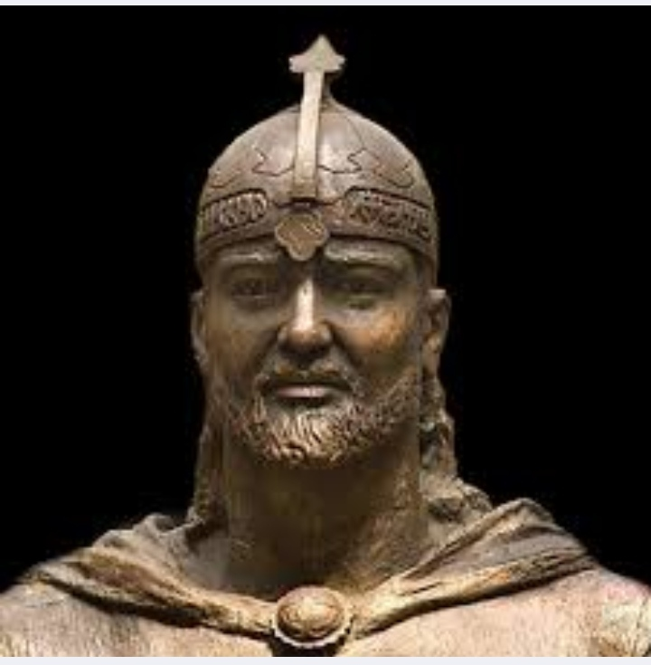

Hello
Maqsud Shayxzoda
Maqsud Shayxzoda nomi nafaqat o'zbek kitobxonlari, balki qardosh ozarboyjon o'quvchisi uchun ham ardoqli nomdir. Chunki iste'dodli shoir Ozarboyjon diyorida tug'ilib, ijodkor sifatida O'zbekistonda ulg'aydi, atoqli qalam sohibi sifatida kamol topdi,o'zbek adabiyotining XX asrdagi ulkan namoyandasiga aylandi. Ikki xalqning farzandi bo'lmish Maqsud Ma'sum o'g'li Shayxzoda 1908-yilda Ozarboyjonning Agdash (Oqtosh) shahrida shifokor oilasida tug'ildi.Boshlang'ich va o'rta ma'lumotni o'z maktabida olgach, Boku oliy pedagogika institutiga sirtdan o'qishga kiradi.1925-yildan boshlab Darbanddagi 1-bosqich Ozarboyjon maktabida, Bo'ynoqdagi ta'lim va tarbioya texnikumida o'qituvchi bo'lib ishlaydi.1927-yilda aksilinqilobiy tashkilot a'zosi sifatida qamoqqa olinib,1928-yilning fevralida Toshkentga surgun qilinadi.U Toshkentga kelgach 1935-1938-yillarda O'zbekiston Fanlar komiteti qoshidagi Til va adabiyot institutida ilmiy xodim, 1938-yildan vafotiga qadar Nizomiy nomidagi Toshkent davlat pedagogika instituti (hozirgi Nizomiy nomidagi Toshkent davlat pedagogika universiteti)ning o'zbek mumtoz adabiyoti kafedrasida dotsent vazifasida xizmat qildi. Bu qalami o'tkir yozuvchi Maqsud Shayxzoda 1967-yilda dunyodan ko'z yumdi.
Jaloliddin Manguberdi tragediyasi haqida
Jaloliddin Manguberdi tragediyasi aslida tarixiy fojeadan lavhalar bo'lib, bunda:
Sulton Mahmud Alovuddin Xorazmshox-Xorazm shohi
Jaloliddin Manguberdi-uning o'g'illaridan biri.
Sultonbegim-shohning qizi, Jaloliddinning tug'ishgan singlisi.
Amir Badriddin-Samarqand hokimi, Sultonbegimning qaylig'i.
Temur Malik-sardor, Xojand hokimi.
Muhammad Nasaviy-Tarixchi, Jaloliddinning kotibi.
Ona-Jaloliddin va Sultonbegim onasi.
Yaroqbek-Badriddinning mulozimi.
Chingizxon-mo'g'ul xoqoni.
Qodog'on no'yon-Chingizxonning sarkardalaridan.

Tuzuvchilar:
Qo'ziboyev Aslbek
Avazberdiyev Behruz
Boltayev Akbar
Kodirov Behruz
Komilov Behruz
Yo'ldashov Sardor